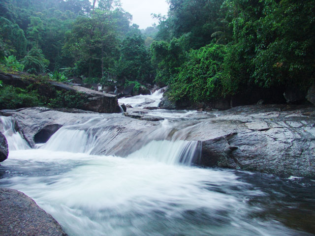
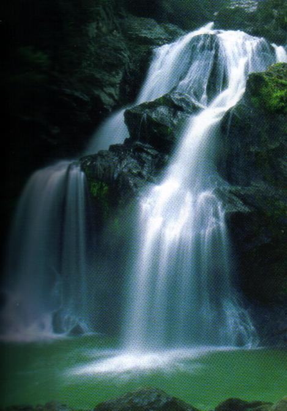
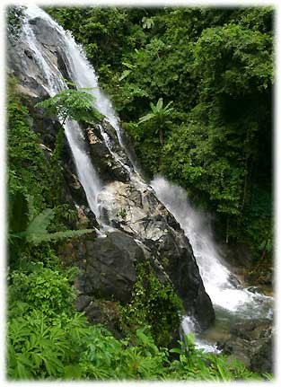
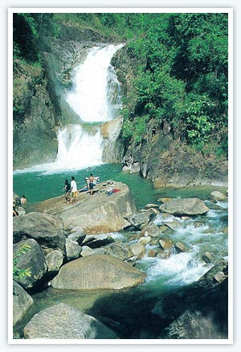

.jpg) |
น้ำตกพรหมโลก อยู่ในท้องที่ตำบลพรหมโลกอำเภอพรหมคีรีสามารถเดินทางไปตามทางหลวงหมายเลข4016ประมาณ 18 กิโลเมตร แล้วแยกซ้ายไปตามทางหลวงหมายเลข 4132 อีกประมาณ 4 กิโลเมตรน้ำตกพรหมโลกเป็นน้ำตกที่สวยงาม มีชั้นน้ำตกประมาณ 50 ชั้น เปิดบริการให้นักท่องเที่ยวได้เที่ยวชม 4 ชั้น
|
|  | น้ำตกอ้ายเขียว ตำบลทอนหงส์ ห่างจากอำเภอเมือง ประมาณ 30 กิโลเมตร ตามทางหลวงหมายเลข 4016 ใช้เส้นทางเดียวกับน้ำตกพรหมโลก แต่เลยไปจนถึงกิโลเมตรที่ 24 มีทางแยกซ้ายเข้าไปอีก 5 กิโลเมตร ต้นน้ำเกิดจากเขาหลวงเช่นกัน มีทั้งหมด 15 ชั้น เช่น หนานช่องไทร หนานบังใบ หนานไม้ไผ่ หนานเสือผ่าน หนานบุปผาสวรรค์ หนานหินกอง หนานหัวช้าง หนานไทรกวาดลาน หนานฝาแฝด สภาพทั่วไปยังคงเป็นป่าทึบ สองข้างทางเข้าน้ำตกเป็นสวนพลู ชาวนครเรียกว่า “พลูปากหราม” เพราะมีรสเผ็ดร้อน กลิ่นหอม การเดินทางไปชมน้ำตกควรจะไปในช่วงหน้าฝนเพราะน้ำจะไหลแรงเป็นสายสีขาวจากผาสูง ดูสดชื่น และหากจะชมทิวทัศน์ยอดเขาหลวงซึ่งมีความสูงจากระดับน้ำทะเล 1,835 เมตร ควรไปชมที่น้ำตกแห่งนี้
|
|  | น้ำตกกรุงชิง เป็นน้ำตกที่สวยงามและสำคัญของอุทยานแห่งชาติเขาหลวง ที่ตั้งอยู่ในตำบลกรุงชิงชื่อ "กรุงชิง" มาจากคำว่า "ต้นชิง" ซึ่งเป็นพันธุ์ไม้ตระกูลปาล์มชนิดหนึ่งที่มีอยู่มากในเขตนี้ น้ำตกกรุงชิงมีอยู่หลายชั้น เช่น หนานมัดแพ หนานฝนแสนห่า หนานปลิวหนานจน หนานโจร หนานต้นตอ หนานวังเรือบินชั้นที่สวยที่สุด ได้แก่ "หนานฝนแสนห่า" เพราะน้ำตกจากหน้าผาสูงชันประมาณ 100 เมตร กระแสน้ำแผ่เป็นผืนกว้างกระจายออกเป็นละอองเหมือนม่านฝน จีงเรียกว่า "ฝนแสนห่า" จากหน่วยพิทักษ์แห่งชาติเขาหลวง ถึงหนานฝนแสนห่า ระยะทาง 3.8 กม. บริเวณน้ำตกกรุงชิงมีที่พักและ สถานที่สำหรับเล่นแคมป์ไฟ มีร้านค้าและร้านอาหารตั้งอยู่เชิงเขา การเดินทางจากตัวเมือง ใช้เส้นทางหลวงสายนครศรีธรรมราช-พรหมคีรี (ทางหลวงหมายเลข 4016) ถึงสามแยกนาเหรงเลี้ยวซ้ายไปถึง กิ่งอำเภอนบพิตำแล้วเลี้ยวขวา (ทางหลวงหมายเลข 4186) ระยะทาง 70 กม.
|
|  | น้ำตกปุญญบาล อ. เมือง จ. ระนอง ตั้งอยู่ในเขต อุทยานแห่งชาติลำน้ำกระบุรี เป็นน้ำตกที่ไหลแรงตลอดปี อยู่ติดกับถนนเพชรเกษมสายเก่า บริเวณกิโลเมตรที่ 598 ห่างจากที่ทำการอุทยานแห่งชาติ 2 กิโลเมตร มีนักท่องเที่ยวแวะชมปีละเกือบแสนคน ต้นน้ำเกิดจากป่าละอุ่นและป่าราชกรูด บริเวณต้นน้ำของน้ำตกปุญญบาลมีต้นพญาไม้ หรือขุนไม้ ขนาดโตวัดรอบที่ระดับความสูงเพียงอก 442 เซนติเมตร สูง 50 เมตร
|
|  | น้ำตกสายรุ้ง ตรังเป็นเจ้าของป่าสวยทะเลใส การเยือนทะเลตรังในฤดูร้อนคือสิ่งวิเศษที่สุด เช่นเดียวกับการได้ท่องป่าตรังเพื่อชมน้ำตกในฤดูฝน ก็เป็นสิ่งที่ยอดเยี่ยม เทือกเขาบรรทัดที่พาดผ่านจังหวัดตรัง ได้รับอิทธิพลจากลมมรสุมที่พัดจากทะเลตลอดปี ทำให้ป่าตรังไม่รู้จักการผลัดใบ และไม่รู้จักความแล้งนี่คือป่าสดที่น่าสัมผัสยิ่ง
|